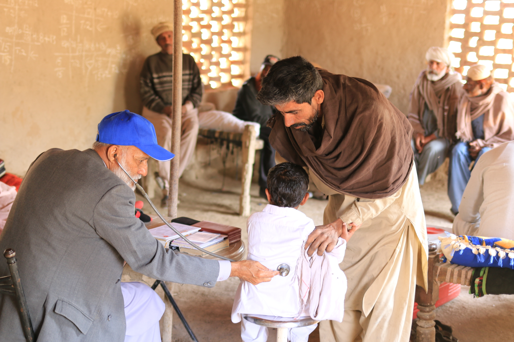
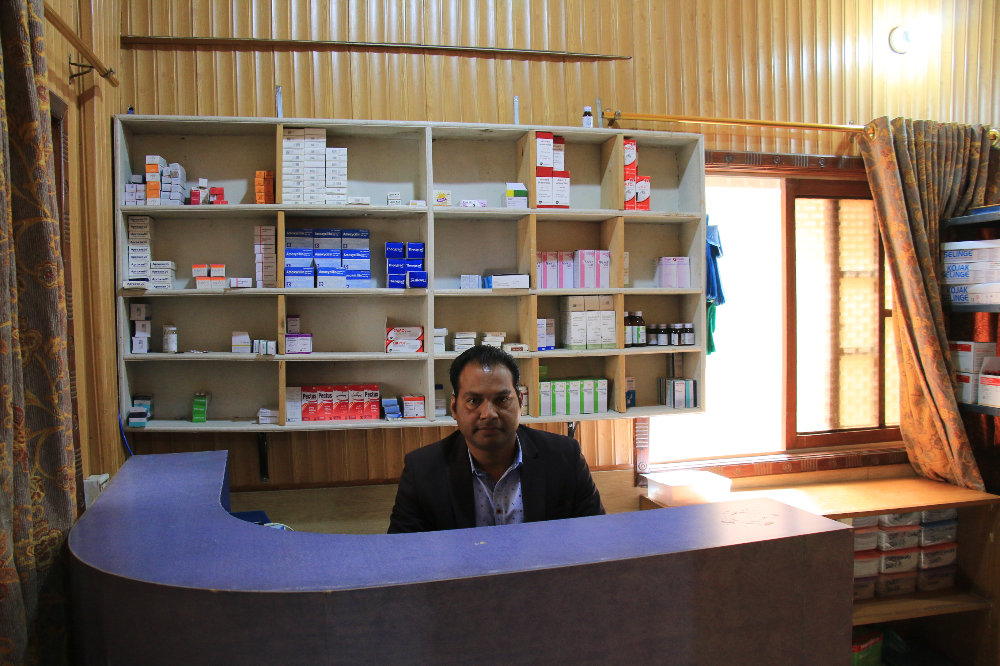

Be strong, and let your heart take courage, all you who wait for the LORD!
Psalm 31:24


Medical Work
Lifeline Christian Development INGO based formed at Sukkur in 1995 by Dr. Michael Loos and his wife Dr. Lilith, Hans Martin and Sister Ileona for the purpose to eliminate TB and working for this community .The
plant grown more , now working as a TB (Basic management unit )and thus this Clinic has been approached and funded by German Missionary and thus its new inchrage is Dr. Yousaf Sadiq since 1996.
School Work
LifeLine Christian School was a vision of Mr.Paulus Bahadur that their must be a school for the children of those families which are poor. Two German missionaries Mr.HansMartin and Mr Matthias Herter who were already working with Lifeline Development services got interested in school project; therefore, with their efforts and dedication the school started on 1st Feb,2003. The school's aim is to provide free quality education to underprivileged students.